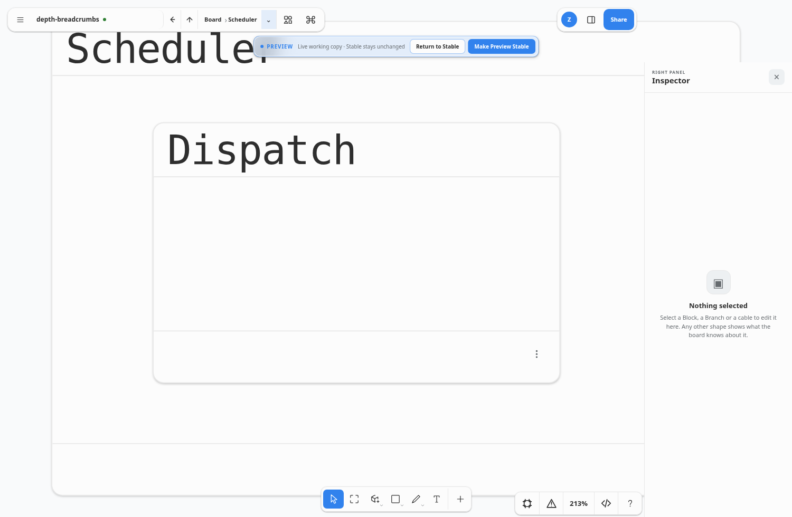
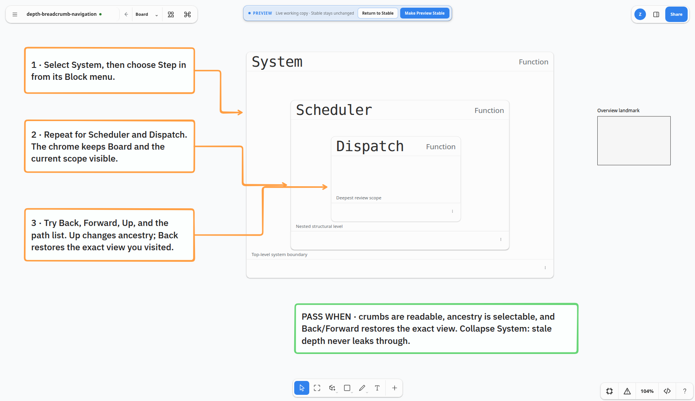

Board›System›Scheduler
SystemSketch implementation gallery · 2026-09-04
Breadcrumbs describe structure. Back/Forward describe where you were.
Depth isolation keeps its Step In and structural Up behavior. The compact inline path keeps root and current scope visible, while the full ancestor path remains one ordinary, selectable list away.
session-onlynot serializednot undo historyone shared navigation transaction
previous view← →current view
Audit repairs
- Every transaction records an explicit settled camera target before its optional 260 ms animation begins; a rapid Back/Forward cannot save a tween sample.
- A history location now requires an unbroken parent chain and every enclosing Block Expanded. Collapse, deletion, and orphaning prune stale entries rather than leaking through an isolation boundary.
- Overview selects and fits an Expanded Block at Board root; only an explicit Step In enters isolation. Page headings use the same transaction and clear old scope before the new page can render.
- Root camera lineage survives root → depth → root → Forward → Up, resetting only after a real root-camera divergence. The path disclosure is intentionally an ordinary list, not a menu with pretend roving focus.
Real browser evidence

Human review fixture

Verified: focused TypeScript/Vitest suite and the real-browser breadcrumb journey each ran twice cleanly; the full check gate includes the browser journey.
Review
Open the review board · Read the fixture recipe · Read the CDP journey
Known limitation: this is a session-local navigation trail. Reloading intentionally begins a new trail; it does not become board data or participate in tldraw undo.